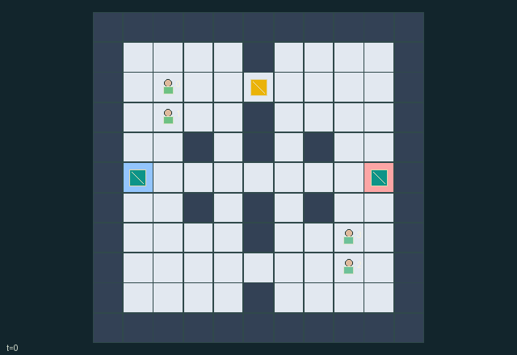

GI089 · Lantern Intercept

Bring the single relic to your team base with your runner carrying and your scout simultaneously co-signing nearby, while the other team can intercept.
Identity and original contract
4 independently actionable roles; 11 discrete commands per role; 63 native observation columns per role; original horizon 100 steps. Declared per-step reward range: -7.0 to 7.0. Observation regime: partially_observable.
Source SHA-256: 0eb71ead2afbbe9f80e84fd2b382a2431f9a87610211f6ef2c2540ea1d88a7fb
The objective, rewards, population, map and horizon remain original. A preview is not a success claim.
Objective and gameplay
Bring the single relic to your team base with your runner carrying and your scout simultaneously co-signing nearby, while the other team can intercept.
A scout public lantern reveals information to both teams; coordinated screens prevent enemy tags, tags stun and drop carried relics, paired handoffs exchange cargo, and extraction needs both teammates in space and time.
- Two teams each have one scout and one runner. The relic starts at one of three original ridge openings chosen from the reset key.
- Scouts see farther. A four-turn lantern reveals nearby agents and the relic to both teams, at a real energy/action cost.
- Pick up within one cell. A carrying scout can move only on even old-clock turns; runners do not have that carrying slowdown.
- Both adjacent teammates must choose HANDOFF to transfer. The relic position follows its actual carrier.
- TAG costs one energy and starts a three-turn cooldown. A hit stuns for two turns and drops any carried relic.
- A teammate SCREEN blocks tags on the adjacent partner for that turn. It cannot protect the screener itself.
- Extract only with the runner on its own pad holding the relic and an adjacent scout co-signing on the same turn.
- Tags occur before pickup, handoff and extraction; either participant being hit can disrupt a rendezvous.
- WAIT restores one energy. Public notices do not disclose hidden positions. Each role view uses actual visibility masks.
Ending: One team natural-completes when its runner stands exactly on its base holding the relic and its adjacent scout also chooses CO-SIGN, with neither hit by an unprotected tag that turn.
What this game explores
Information, sensing & communication: Who knows a fact, when it was measured, and whether it was communicated are separate state variables. Test memory or communication using only the same role-visible evidence.
Joint transport & shared access: Positions, load geometry, occupancy and persistent access constrain whose action can succeed next. Distinguish physical handoff, shared controls and simultaneous force from a cosmetic cooperation label.
Team opposition & interception: Cooperation within a team can coexist with opposition between teams. Preserve team membership, capture and possession rules, and report each team's outcomes instead of assuming a single shared return.
These are questions supported by rule structure, not observed learning effects.
Play it: operating walkthrough
crucibles play --game gi089Keep Python running and open its printed address. Select this game, set a seed and press Create session. The game itself is always English.
Assign a role range to Host with Assign / take over, or Assign all roles. Invite a second participant with Create player invitation, then assign a disjoint subset. Every original role is available.
For every owned role choose a legal command and press Queue. Arrow keys / WASD queue a declared directional action for the current role camera when available. Space or Advance one joint step advances everyone together. Non-directional games use the selectors.
Unqueued roles use the labelled untrained uniform-legal policy. Take over or release roles before the next step without resetting. Full-state debug is privileged and permanently logged; role cameras preserve permissions. Close the session to retain logs. Server restart does not restore sessions.
Complete command reference
IDs and English labels exactly match the manifest. Availability depends on role, resources, location and phase. An available action can still have no productive effect.
0·WAIT and recover one energy
1·NORTH intent
2·EAST intent
3·SOUTH intent
4·WEST intent
5·FLASH public four-turn lantern, scout only
6·PICK UP uncarried relic within reach one
7·JOINT HANDOFF with adjacent teammate
8·TAG adjacent enemy
9·SCREEN adjacent teammate from tags this turn
10·CO-SIGN extraction near own base
Roles and capability identifiers
These original role names describe capabilities, not interchangeable skins. Check each owned role's legal selector before planning handoffs.
agent_0·team 0 scout: long range scan, public lantern, slowed when carrying
agent_1·team 0 runner: short range relic recognition, extraction carrier
agent_2·team 1 scout: long range scan, public lantern, slowed when carrying
agent_3·team 1 runner: short range relic recognition, extraction carrier
Information and observation permissions
Public fixed map, bases, active lantern positions/lifetimes and alarm/claim/extraction announcements. Scouts see agents and relic within Manhattan radius 4; runners see agents within 2 and recognize relic within 1. Any active lantern makes agents/relic within 3 visible to everyone, through walls by the stated radio-scan rule.
The GIF is full-state debug and may reveal hidden entities or private state. Train on obs[agent], not the picture, state tree or another role's private row. Field slices and visibility are in the original manifest.
Reinforcement-learning integration
import jax
from crucibles_jaxmarl import make
env = make("gi089")
key = jax.random.PRNGKey(0)
key, rk, ak, sk = jax.random.split(key, 4)
obs, state = jax.jit(env.reset)(rk)
actions = env.sample_actions(ak, state)
obs, state, rewards, dones, info = jax.jit(env.step_env)(sk, state, actions)
done = dones["__all__"]Observations are float32 vectors of width 63; actions are scalar int32; masks have 11 entries. Supply all 4 roles each transition. Masked sampling is an engineering reference, not a trained learner.
step_env retains terminal data without reset. step performs outer autoreset and keeps terminal data in info["raw_state"] and info["raw_observation"]. Use dones["__all__"] for episode boundaries; separate completion, failure and time limit in analysis.
JIT or vmap equal identities and shapes. Split independent reset, policy and transition keys. Group different shapes explicitly; do not shrink the population or horizon. Host rendering stays outside training.
Training questions and fair evaluation
Define valid completion from the objective before fitting. Preserve original rewards and also report real deliveries/services, losses, resource state, unresolved episodes and per-role returns. Animation is not a reward signal.
Who knows a fact, when it was measured, and whether it was communicated are separate state variables. Test memory or communication using only the same role-visible evidence.
Positions, load geometry, occupancy and persistent access constrain whose action can succeed next. Distinguish physical handoff, shared controls and simultaneous force from a cosmetic cooperation label.
Cooperation within a team can coexist with opposition between teams. Preserve team membership, capture and possession rules, and report each team's outcomes instead of assuming a single shared return.
Compare memory, communication or centralized critics under matched actor information. Declare critic access; keep actor inputs role-filtered. Match partner/opponent distributions, masks, compute and checkpoint selection. Final tests never enter fitting or selection.
Independent training runs or source-pairing blocks are inferential units; episodes from one policy are not independent training replications. Save hashes, keys, versions, device, time and cost. Negative, zero, failed and indeterminate outcomes are valid. No trained checkpoint or target score is supplied.
Classification and evidence
Overlapping editorial labels are reading aids, not proof of novelty, difficulty, strategic equivalence or learning effects.
- Information, sensing & communication
- Evidence
manifest.task.interaction: A scout public lantern reveals information to both teams; coordinated screens prevent enemy tags, tags stun and drop carried relics, paired handoffs exchange cargo, and extraction needs both teammates in space and time.
- Evidence
manifest.task.observation_access: Public fixed map, bases, active lantern positions/lifetimes and alarm/claim/extraction announcements. Scouts see agents and relic within Manhattan radius 4; runners see agents within 2 and recognize relic within 1. Any active lantern makes agents/relic within 3 visible to everyone, through walls by the stated radio-scan rule.
- Evidence
scene.rules.1: Scouts see farther. A four-turn lantern reveals nearby agents and the relic to both teams, at a real energy/action cost.
- Joint transport & shared access
- Evidence
manifest.task.objective: Bring the single relic to your team base with your runner carrying and your scout simultaneously co-signing nearby, while the other team can intercept.
- Evidence
manifest.task.interaction: A scout public lantern reveals information to both teams; coordinated screens prevent enemy tags, tags stun and drop carried relics, paired handoffs exchange cargo, and extraction needs both teammates in space and time.
- Evidence
scene.rules.2: Pick up within one cell. A carrying scout can move only on even old-clock turns; runners do not have that carrying slowdown.
- Team opposition & interception
- Evidence
manifest.task.objective: Bring the single relic to your team base with your runner carrying and your scout simultaneously co-signing nearby, while the other team can intercept.
- Evidence
manifest.task.interaction: A scout public lantern reveals information to both teams; coordinated screens prevent enemy tags, tags stun and drop carried relics, paired handoffs exchange cargo, and extraction needs both teammates in space and time.
- Evidence
manifest.task.observation_access: Public fixed map, bases, active lantern positions/lifetimes and alarm/claim/extraction announcements. Scouts see agents and relic within Manhattan radius 4; runners see agents within 2 and recognize relic within 1. Any active lantern makes agents/relic within 3 visible to everyone, through walls by the stated radio-scan rule.
Source, receipts and preview limits
The world-only English GIF replays saved untrained legal actions through the original kernel. At most 25 actual endpoints include initial and terminal state; no invented interpolation. It is full-state debug, not the role observation.
Original source, observation slices, manifest and mechanism
Native receipt · Presentation receipt
Engineering passes do not establish learning. Nonzero floating differences remain recorded and undetermined; no new tolerance was introduced. Human scores remain unverified.